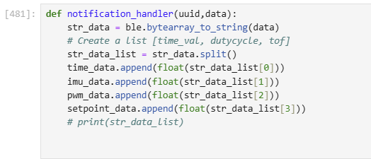
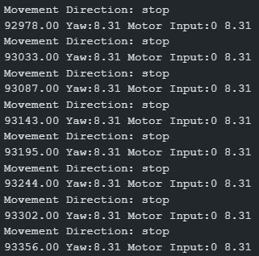
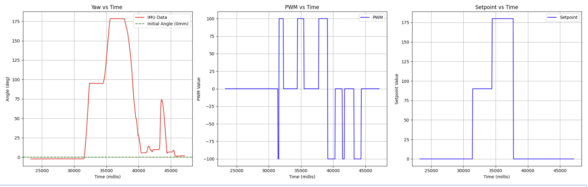
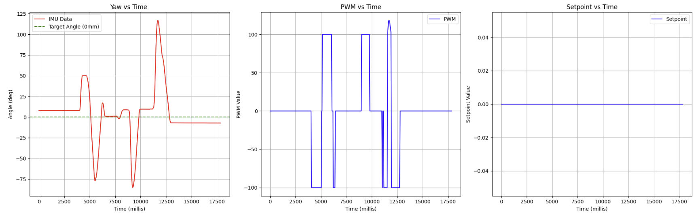

Lab 6: Orientation PID Control
Prelab
My design for a debugging system remained mostly the same as my Lab 5 implementation, with the addition of a new parameter for adjusting the angle setpoint.
In the implementation above, this new function sets the global variable setpoint to the newly received setpoint. In my main PID loop, this global setpoint variable is referenced so that when a new setpoint is received over BLE while the PID loop is running, subsequent PID calculations are then based off of the new setpoint, allowing for setpoint updates on the fly.
Clearly describe how you handle sending and receiving data over Bluetooth. Consider adding code snippets as necessary to showcase how you implemented this on Arduino and Python
I also kept a very similar setup for sending and retreiving gains from Lab 5 for remote control and configuration of PID, as well as my failsafe to shut off the robot's motors in case of a BLE disconnect.
To handle sending and receiving data from my PID controlled runs, I first initialized a 2D array in heap memory of a specified size on system startup in a similar approach to my data collection method in Labs 2 & 3.
While PID control is on and there is still available space in the IMU array, I obtain and store timestamped IMU sensor information and the inputs into my motors, and append that data into the data array.
Similar to Lab 5, I isolated my data sending function to a separate command called "SEND_ANGULAR_DATA" that I could trigger only when I wanted to save the data from a test:
I could then retrieve transmitted values from my laptop with the following notification handler:
Lab Tasks
You should integrate your gyroscope to get an estimate for the orientation of the robot.
To begin this week's lab, I needed to integrate readings from the IMU's gyroscope in order to estimate the orientation of my robot around its z-axis (yaw).
Does your sensor have any bias? Are there any problems that digital integration might lead to over time? Are there ways to minimize these problems?
The ICM-20948's gyroscope does have some bias as discovered in the "Pitch Roll Yaw" section of Lab 2.
Even when placed perfectly still on a table and without any movement around any axis, the gyroscope has a very slight initial offset from absolute 0 in the roll, pitch, and yaw axes. This error worsens over time as these readings are digitally integrated, resulting in a very visible 'drift' in the recorded angle readings provided by the gyroscope over time (see Lab 2 graphs).
One way to minimize/correct the issue of bias is to subtract the initial bias offset collected on startup from the gyroscope from all future readings from the gyroscope as a correction.
One way to minimize the subsequent drift is to use a complementary filter like we had done in Lab 2, which incorporates inertial measurement data from other sensors on the IMU (like the accelerometer or magnetometer) to provide another form of correction.
Another correction method, as mentioned briefly in class, was to use the IMU's onboard DMP (Digital Motion Processor) which uses some sensor fusion algorithms to fuse data from the gyroscope, magnetometer and accelerometer to output calibrated quaternion data.
Consider using the onboard digital motion processor (DMP) built into your IMU to minimize yaw drift.
From some advice from the professor and classmates, I was interested in attempting to use the DMP (Digital Motion Processor) on the board in order to improve the accuracy and precision of my gyroscope readings.
I thought this would save a lot of time in the future, and improve the performance of my PID controller.
To do this, I followed the provided tutorial from Stephan Wagner, and added setup functions to initialize and enable the DMP:
One really important parameter to note is the second argument passed to the myICM.setDMPODRrate() function. Like Stephan mentions in his tutorial, unexpected behavior occurs when the DMP outputs data faster than the PID loop can pull data from the FIFO.
For me, this resulted in nan values being returned by the DMP, even when myICM.status showed that data was available.
I was able to fix this by passing a value of 2 to myICM.setDMPODRrate(), which slows down the DMP ODR to around 26Hz so that my calls to retrieve data from the FIFO could outpace the DMP output. However, doing this directly affects the sampling rate as I will cover in my "Range and Sampling Time Discussion"
With the DMP initialized, I could then retrieve yaw values with a new get_yaw function:
Are there limitations on the sensor itself to be aware of? What is the maximum rotational velocity that the gyroscope can read (look at spec sheets and code documentation on github). Is this sufficient for our applications, and are there ways to configure this parameter?
Yes, there are limitations to the gyroscope that we need to be aware of. According to the ICM-20948's data sheet, the maximum rotational velocity that the gyroscope can read is 2000 dps (degrees per second). This maximum appears to be configurable using the GYRO_FR_FSEL register, and looking into Sparkfun's ICM-20948 library implementation, when the DMP is enabled, the gyroscope's FSR (full scale range) is set to 2000 dps by default (see below).
A setting of 2000 dps hardly feels like a limitation, however, as this value seems to be more than sufficient for our use cases -- although it is a very fast robot, our robot will never likely make or need to make more than 6 full rotations per second in order to reach its setpoint from any orientation.
Once I had the yaw readings from the DMP finalized, I could begin with my implementation of a PID controller for orientation control.
Similarly to Lab 5, I wanted to first start by considering the range and sampling time of my sensor.
Range and Sampling Time Discussion
Range of the gyroscope = 360 degrees, (-180 deg , +180 deg)
Sampling Rate = 20 Hz, 1 reading approx. every 50 ms (found by Serial printing output to terminal whenever calls to get_yaw return true and a valid yaw angle.)
This sampling rate seems slow but makes sense for my setup. The sampling rate is not only bottlenecked by the output rate of the DMP to the FIFO (which from earlier should have an ODR of around 26Hz), but also will only run when yaw data retrieval from the DMP returns an available status.
Although I hoped to find a way to increase the sampling rate, from my experimentation, this sampling rate ended up being the fastest rate that I could sample the DMP without emptying the buffer and causing unexpected yaw values to be returned.
PD Controller
Next, using my pi_controller from Lab 5 as a basis for this lab, I decided to attempt PD orientation control in this lab.
P/I/D discussion (Kp/Ki/Kd values chosen, why you chose a combination of controllers, etc.)
My reasoning for settling on PD for this lab was twofold.
Firstly, before settling on a PD controller, I had tested just my p controller with orientation data and would have drastic overshoots during times where the setpoint changed dramatically. For example, in a setpoint change of from 0 to 180, the robot would rapidly acclerate to compensate for the large error, overshoot its setpoint, and carry that error into future rotations, resulting in the robot spinning out and never settling.
By adding this derivative term, I was hoping it would help smooth out the controller's response by accounting for the rapidly shrinking error as the robot snaps to the setpoint with the p term, and slow down/counteract the rapid changes in the error, providing a damping to prevent overshooting and oscillations.
Secondly, I chose to omit the integral term this time around as I did not feel it had contributed much in Lab 5, and if it did it would need to be significantly dampened/throttled in order to not send outrageous pwm signals to the motor, which at that point made it a relatively futile addition.
Furthermore, during my testing, the steady state error was well within an acceptable margin of approx 10 degress, which I was okay with for this lab.
I do acknowlege that adding an integral term would very likely help reduce this steady state error, but given the time constraints of testing I did not feel that this extra effort would be worth it.
Creating a function called pd_controller_angular which calculates the current error between the robot's yaw angle and the current yaw setpoint. It also incorporates the derivative term, taking into account the derivative of the error.
I also needed to edit the mapping function that maps these into an operable range of values that my motor driver could receive (values between 100(due to turning deadband (found in Lab 4)) and 255(Max PWM)), and calls the appropriate logic to either rotate the robot clockwise or counterclockwise directly proportional to the output of the p controller.
Similar to my implementation for Lab 5, you will notice in the pid_to_pwm_angular function that for outputs of my PID controller with values under 10, I run the stop motors function (which just writes a PWM of 0 to the drivers) instead of letting the motors ramp up to some value above 100 to overcome the turning deadband. Like in Lab 5, I noticed that ramping up the PWM value above deadband to overcome static friction in any range below 10 would actually cause excess overshoots and jittery oscillations of the robot around the setpoint without ever settling at the setpoint when compared to just stopping. Although this does mean there is often some slight steady state error in my implementation when the robot settles, I found this preferable to the robot oscillating indefinitely.
Testing
With my PD controller set up, I wanted to conduct two tests.
The first of the tests is a setpoint test, which cycles through 3 different set points (0,90, 180, and back to 0) to see if the robot can orient itself to each setpoint from various starting orientations.
After many rounds of tweaking gains, I settled on a Kp of 1, Ki of 0.05, CF = 1.4, Max PWM of 100, and to conduct the test on a table with the wheels of the car taped (to reduce static friction coefficient).
Below is a the result of that test:
Setpoint Test Data:
Parameters: KP = 1, KD = 0.05, CF = 1.4, Max PWM = 100, starting position = 0 deg
As can be seen above, the robot is able to align itself to each setpoint, even successfully maneuvering a full 180 degree turn without excess overshoot thanks to the derivative term dampening.
The second of the tests is a orientation correction test, which shows the robot's ability to recover its setpoint after being pushed off course
Using the exact same parameters as before, the following results were obtained:
Setpoint Test Data:
Parameters: KP = 1, KD = 0.05, CF = 1.4, Max PWM = 100, starting position = 0 deg
As can be seen above, the robot successfully handles being pushed away from its setpoint, but as mentioned earlier, some slight steady state error remains due to my implementation of stopping the motors within the acceptable error range of +- 10 degrees, that could likely be fixed by adding an integral term.
At this point I was pretty happy with the results of my PD controller.
As described earlier, the D term seemed to help remove the harsh acceleration curve and rapid changes outputted by the proportional controller, and the proportional controller added the correction force to bring the robot towards the setpoint.
Does it make sense to take the derivative of a signal that is the integral of another signal?
Generally, it is redundant to take the derivative of a signal that is the integral of another signal. To reduce excess computation, we could simply use the signal itself as our 'derivative' value.
However, when using the DMP, the outputs of the DMP are not integrated signal values but are distinct angle values, and there is no underlying signal that has been integrated to take the derivative of.
Think about derivative kick. Does changing your setpoint while the robot is running cause problems with your implementation of the PID controller?
Derivative kick occurs when a rapid change in the setpoint causes a spike in the control output of the PID controller due to the derivative term responding to this newfound rapid change in error. I did have issues with a rapid change in setpoint causing a jump in derivative values initially but introducing a lowpass filter on the derivative term before outputting the final pid output helped with this significantly.
Is a lowpass filter needed before your derivative term?
Yes, the introduction of the lowpass filter, with an alpha of 0.014 greatly smoothed out the spikes in the controller outuput when a large change in error/setpoint occured. A snippet of my implementation is shown below:
Have you implemented your code in such a way that you can continue sending an processing Bluetooth commands while your controller is running? This is essential for being able to tune the PID gains quickly and being able to change the setpoint while the robot is running.
Yes, I have implemented my code to allow for BLE commands to be read and received while the control loop is running
As can be seen in this snippet of my main loop below, data can be sent and received by the Nano while the PID control loop is running:
Additionally, as mentioned earlier, when the global setpoint variable is updated by the SET_SETPOINT command over BLE, future PID calculations are run on the new setpoint.
Think about future applications of your PID controller with regards to navigation or stunts. Will you need to be able to update the setpoint in real time?
Yes, I expect future applications of my PID controller in stunts and navigation to be require the ability to update the setpoint in real time to avoid/navigate around static or moving obstacles, or to follow a specific trajectory/path to initiate a stunt.
Can you control the orientation while the robot is driving forward or backward? This is not required for this lab, but consider how this might be implemented in the future and what steps you can take now to make adding this functionality simple.
Yes, this functionality can be implemented in future labs by modifying my linear PID control loop to run in parallel with my orientation PID control loop to adjust the orientation of the robot while driving forwards or backwards.
Collaboration Statement
I referenced Stephan Wagner's website and DMP tutorial for this lab.
Additionally, thank you to Jeffrey Cai for advice regarding DMP setup and debugging!